import numpy as np
import networkx as nx
import matplotlib.pyplot as pltFirst, check the definition of regular graph
Summary
- Euclidean data
- underlying function이 regular graph로 정의가 가능한 data
- underline(domain)이 euclidean domain에 위치한 데이터(x축, 1d-grid, 2d-grid 등)
- euclidean distance로 계산할 수 있는 data
- Non-Euclidean data
- underlying function이 regular graph로 정의가 가능하지 않은 data
- underline(domain)이 non-euclidean domain에 위치한 데이터(곡선, 곡면 등)
- euclidean distance calculation이 not reasonable한 data
Graph vs Manifold
- 굳이 포함관계를 따지자면, Non-Euclidean > Graph > Manifold
- Non-Euclidean
- Graph
- 거리는 Edge 나 weight 로 정의함.
- Manifold(ex. swiss roll, 아래 예시 있음!)
- underline = domain(swiss roll에서 말린 곡면)
- underlying function = color(swiss roll에서 무지개 색)
- 유한한 그래프 시그널로 표현 가능
- 무한한 노드에서 realization sample 뽑고,
- 그래프로 가져오려면 distance 정의 수정이 필요하다.
- 수정하는 방법
- \(W_{i,j} = \begin{cases} \exp\left(-\frac{\|{\boldsymbol v}_i -{\boldsymbol v}_j\|^2}{2\theta^2}\right) & \|{\boldsymbol v}_i -{\boldsymbol v}_j\|^2 \le \kappa \\ 0 & o.w\end{cases}\)를 사용하여 가까운 것만 거리 계산하도록 하기, 곡선은 유클리디안 거리를 semi 사용하고(이 식에서 \(\kappa\)로 먼 거리는 자르니까), 곡면은 하버사인 거리를 사용.
- similarity(유사도) 따지기(ex. 몇 번 건너서 다음 노드로 가는지 등)
- 수정하는 방법
- Manifold(ex. swiss roll, 아래 예시 있음!)
- 거리는 Edge 나 weight 로 정의함.
- Graph
Import
Non-Euclidean vs Euclidean
Euclidean
Ex1) 1D grid
Text, etc.
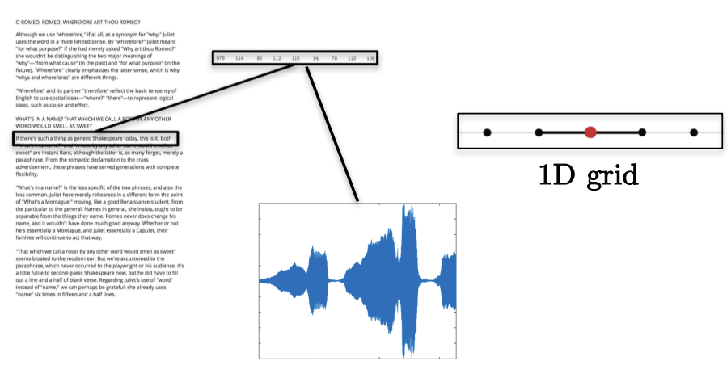
w=np.zeros((5,5))
for i in range(5):
for j in range(5):
if i==j :
w[i,j] = 0
elif i-j == 1 :
w[i,j] = 1lst = []
for i in range(5):
for j in range(5):
if w[i,j] == 1:
lst.append([i,j])d= w.sum(axis=1)
D= np.diag(d)
Note
모든 Degree가 동일한, 특히 단위행렬로 나오는(Regular graph인) 유클리디안 데이터
Darray([[0., 0., 0., 0., 0.],
[0., 1., 0., 0., 0.],
[0., 0., 1., 0., 0.],
[0., 0., 0., 1., 0.],
[0., 0., 0., 0., 1.]])G = nx.Graph()G.add_edges_from(np.array(lst))plt.figure(figsize=(20, 5))
nx.draw_networkx(G, with_labels=True, font_weight='bold', node_color='orange', node_size=1500, font_color='white', font_size=30,width=5)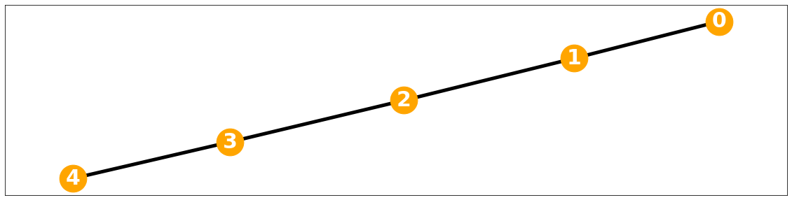
Ex2) 2d grids
Image, etc.
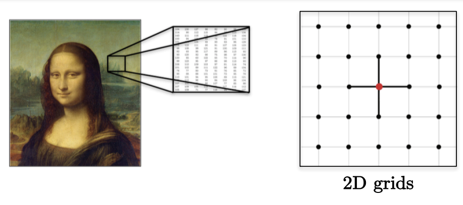
w = np.ones((4, 4))
for i in range(4):
for j in range(4):
if i==j :
w[i,j] = 0lst = []
for i in range(4):
for j in range(4):
if w[i,j] == 1:
lst.append([i,j])d= w.sum(axis=1)
D= np.diag(d)
Note
모든 Degree가 동일하여 \(D = 3I\)로 표현되는(Regular graph인) 유클리디안 데이터
Darray([[3., 0., 0., 0.],
[0., 3., 0., 0.],
[0., 0., 3., 0.],
[0., 0., 0., 3.]])G = nx.Graph()G.add_edges_from(np.array(lst))plt.figure(figsize=(10, 10))
nx.draw_networkx(G, with_labels=True, font_weight='bold', node_color='orange', node_size=1500, font_color='white', font_size=30,width=5)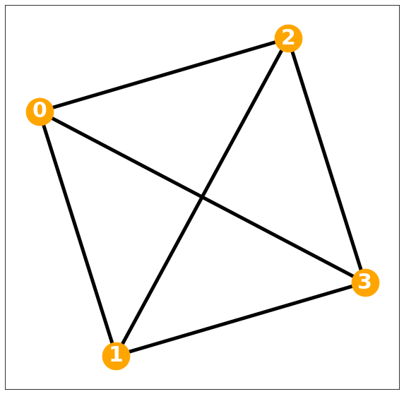
Non-Euclidean
Ex3) Different Weights
Weight 같다고 가정하고 그래프 시각화
w=np.zeros((5,5))
for i in range(5):
for j in range(5):
if i==j :
w[i,j] = 0
elif i!=j:
w[i,j] = 1lst = []
for i in range(5):
for j in range(5):
if w[i,j] == 1:
lst.append([i,j])G = nx.Graph()G.add_edges_from(np.array(lst))plt.figure(figsize=(10, 10))
nx.draw_networkx(G, with_labels=True, font_weight='bold', node_color='orange', node_size=1500, font_color='white', font_size=30,width=5)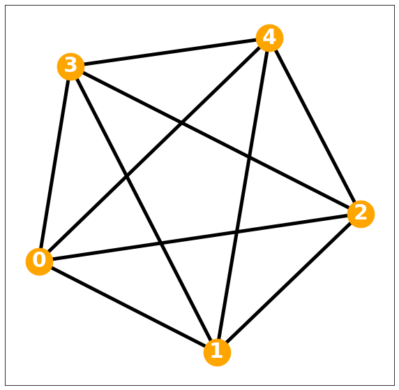
pi=np.pi
ang=np.linspace(-pi,pi-2*pi/5,5)
r=5+np.cos(np.linspace(0,12*pi,5))
vx=r*np.cos(ang)
vy=r*np.sin(ang)
f1=10*np.sin(np.linspace(0,6*pi,5))
f = f1 + np.random.normal(5)D = np.zeros([5,5])
locations = np.stack([vx, vy],axis=1)
for i in range(5):
for j in range(i,5):
D[i,j]=np.linalg.norm(locations[i]-locations[j])
D = D + D.TDarray([[ 0. , 6.0964895 , 11.4126782 , 9.53062515, 7.05342303],
[ 6.0964895 , 0. , 6.0964895 , 7.60845213, 9.53062515],
[11.4126782 , 6.0964895 , 0. , 6.0964895 , 11.4126782 ],
[ 9.53062515, 7.60845213, 6.0964895 , 0. , 6.0964895 ],
[ 7.05342303, 9.53062515, 11.4126782 , 6.0964895 , 0. ]])
Note
가중치 값이 다 다르게 형성되어 있다. 따라서 \(D=kI\)형태로도 표현할 수 없어 레귤러 메트릭스의 정의를 충족하지 못하며, 이는 비유클리디안 데이터이다.
Ex3) Non-Euclidean data with Non-Euclidean domain
degree matrix가 단위행렬이 아니어서 레귤러 그래프가 아닌 그래프
1. 3D shape, Manifold
도메인이 표면(컵)이며, underlying function 이 regular graph로 정의되지 않는다.
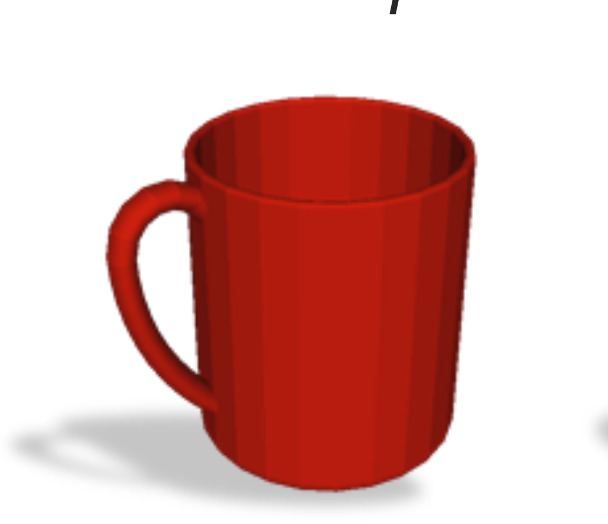
2. 3D shape, Manifold
도메인이 구로 형성되어 있고, graph로 인지 시, underlying function 이 색(파란색)으로 볼 수 있고, 다른 색으로 구성된 것은 \(\eta\)로 볼 수 있고, regular graph로 정의되지 않는다.
간단 \(\eta\) 정의 review = noise 이지만, 특정 i에서 값이 큰 nois를 갖음
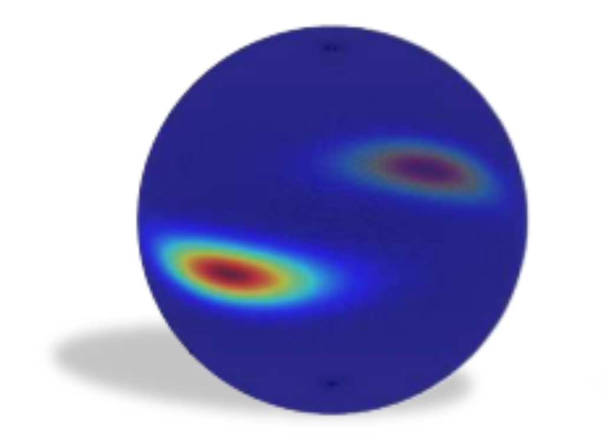
3. 3D shape, Manifold
도메인이 표면(고양이)이며, underlying function 이 색이라고 할 수 있다.
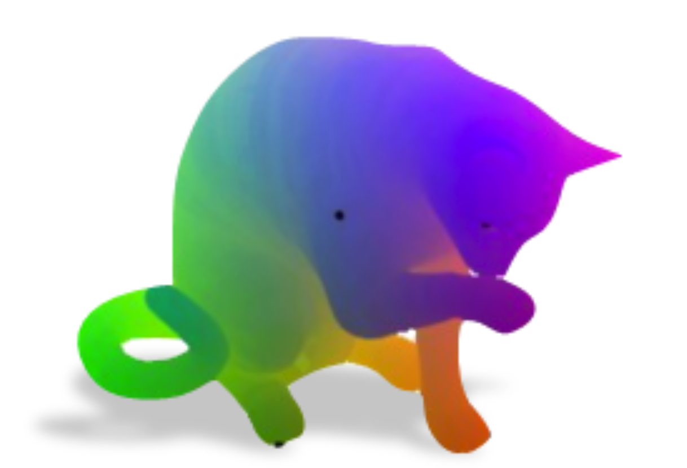
4. 3D shape, Manifold
도메인이 표면이며, underlying function 이 색이다. graph로 볼 때 regular graph로 정의되지 않는다.
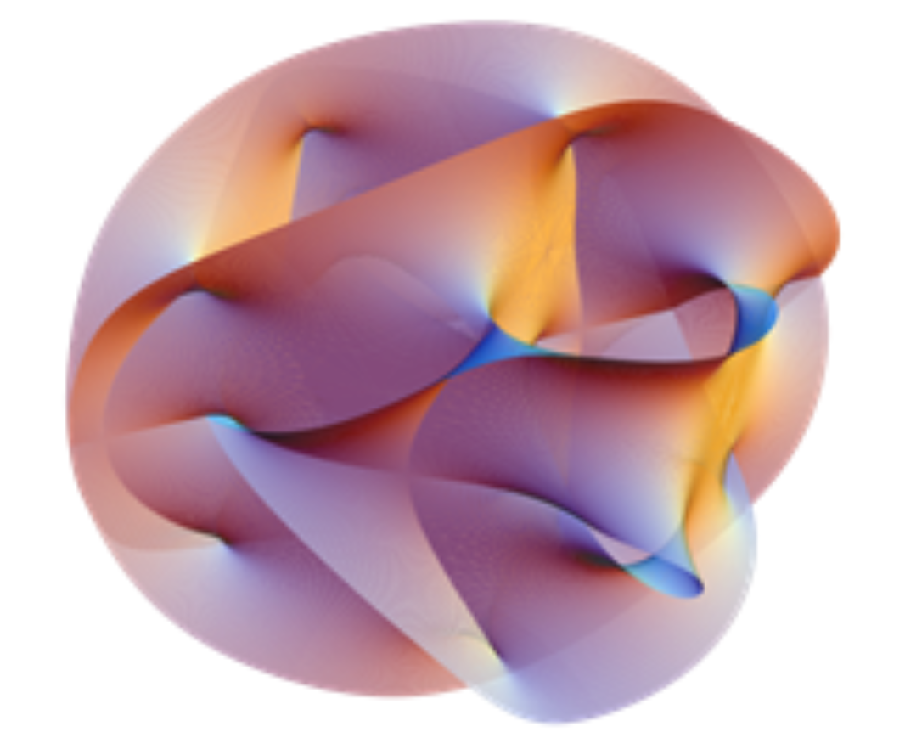
5. Graph
도메인이 노드인 graph. underlying function 은 정의할 수 없지만 굳이 따지자면 Classification work. 신경망 모양..
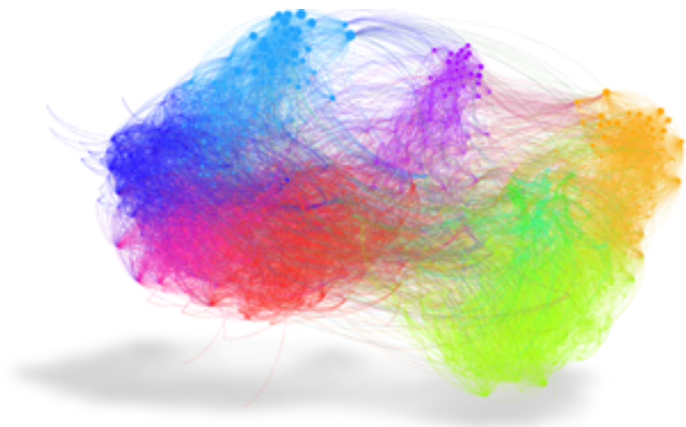
6. Graph(Manifold?)
위의 정의 참고, 노드가 도메인인 graph. 색이 underlying function.
Swiss roll (non-euclid data) from (Das and Pal 2021)
Das, Suchismita, and Nikhil R Pal. 2021. “Nonlinear Dimensionality Reduction for Data Visualization: An Unsupervised Fuzzy Rule-Based Approach.” IEEE Transactions on Fuzzy Systems 30 (7): 2157–69.
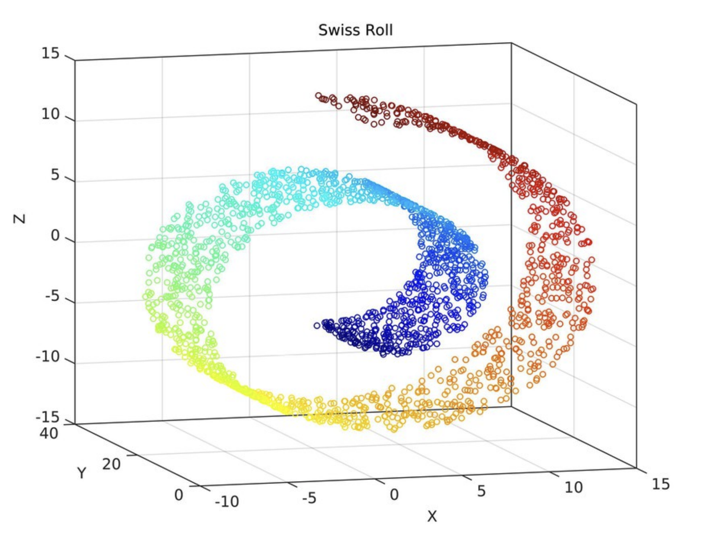
Das, Suchismita, and Nikhil R Pal. 2021. “Nonlinear Dimensionality Reduction for Data Visualization: An Unsupervised Fuzzy Rule-Based Approach.” IEEE Transactions on Fuzzy Systems 30 (7): 2157–69.
7. Graph
도메인이 노드이며, classification work

Ginestet, Cedric E, Arnaud P Fournel, and Andrew Simmons. 2014. “Statistical Network Analysis for Functional MRI: Summary Networks and Group Comparisons.” Frontiers in Computational Neuroscience 8: 51.
8. Graph Signal
도메인이 노드(택시 탄 장소)이며, underlying function 이 색(택시 픽업 얼마나 하는지를 나타냄, 많이 할 수록 레드쪽으로) regular graph로 정의되지 않는다.
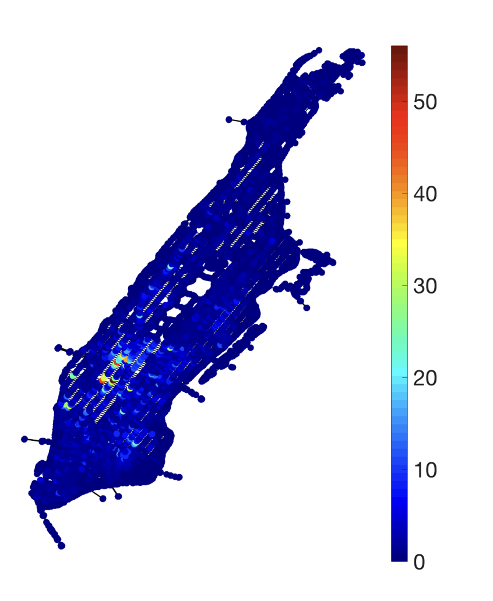
Ortega, Antonio, Pascal Frossard, Jelena Kovačević, José MF Moura, and Pierre Vandergheynst. 2018. “Graph Signal Processing: Overview, Challenges, and Applications.” Proceedings of the IEEE 106 (5): 808–28.
9. Graph signal, spatiotemporal data
도메인이 노드(sequence)이며, underlying function 이 regular graph로 정의되지 않는다.(파란색인 양의 signal, 검정색인 음의 signal로 mapping되어 있는 graph signal의 형태)
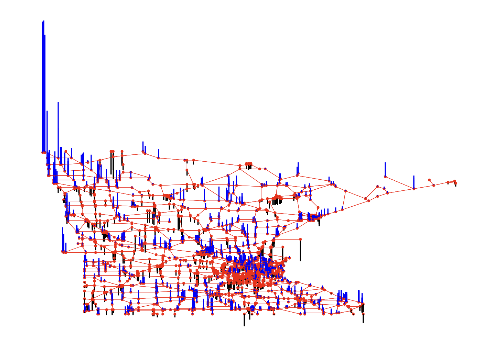
10. Graph(Sequence), dynamic spatiotemporal data
도메인이 표면(사람,motion을 sequence로 전달)이며, dynamic spatiotemporal data
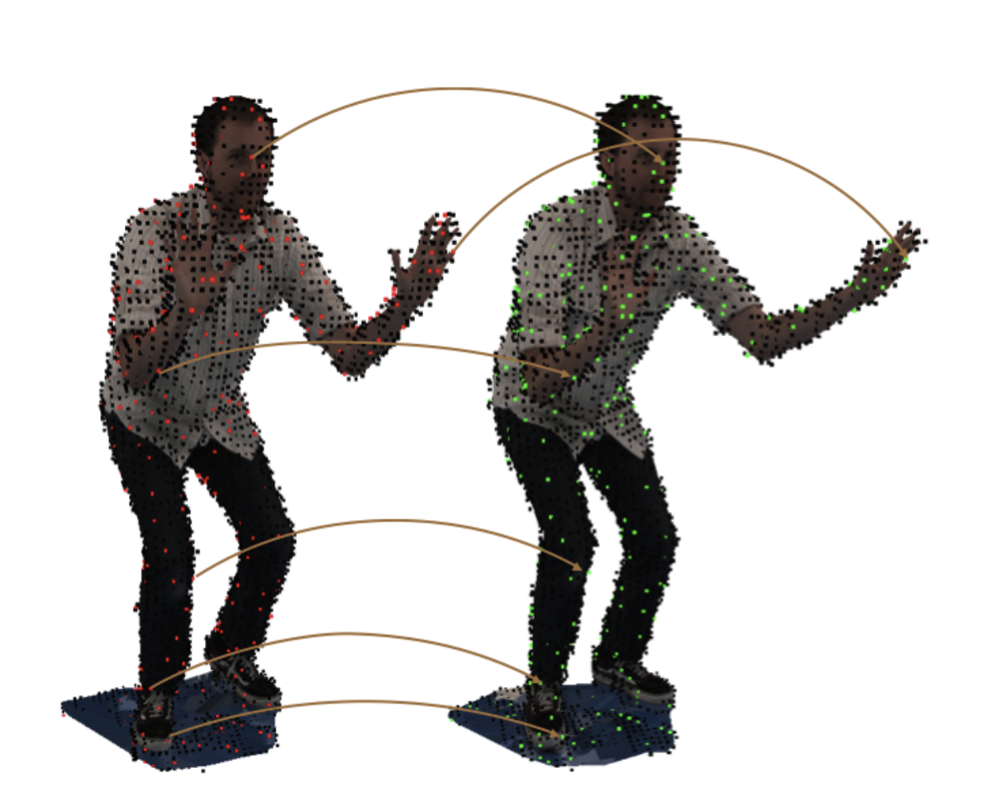
Ortega, Antonio, Pascal Frossard, Jelena Kovačević, José MF Moura, and Pierre Vandergheynst. 2018. “Graph Signal Processing: Overview, Challenges, and Applications.” Proceedings of the IEEE 106 (5): 808–28.
Appendix
Difficulties in analyzing non-Euclidean data
Analyzing non-Euclidean data is one of the most popular topics in recent years. These are collectively referred to as geometric deep learning (Bronstein et al. 2017),(Cao et al. 2020), graph signal processing (Shuman et al. 2013), and graph learning (Xia et al. 2021).
Bronstein, Michael M, Joan Bruna, Yann LeCun, Arthur Szlam, and Pierre Vandergheynst. 2017. “Geometric Deep Learning: Going Beyond Euclidean Data.” IEEE Signal Processing Magazine 34 (4): 18–42.
Cao, Wenming, Zhiyue Yan, Zhiquan He, and Zhihai He. 2020. “A Comprehensive Survey on Geometric Deep Learning.” IEEE Access 8: 35929–49.
Shuman, David I, Sunil K Narang, Pascal Frossard, Antonio Ortega, and Pierre Vandergheynst. 2013. “The Emerging Field of Signal Processing on Graphs: Extending High-Dimensional Data Analysis to Networks and Other Irregular Domains.” IEEE Signal Processing Magazine 30 (3): 83–98.
Xia, Feng, Ke Sun, Shuo Yu, Abdul Aziz, Liangtian Wan, Shirui Pan, and Huan Liu. 2021. “Graph Learning: A Survey.” IEEE Transactions on Artificial Intelligence 2 (2): 109–27.
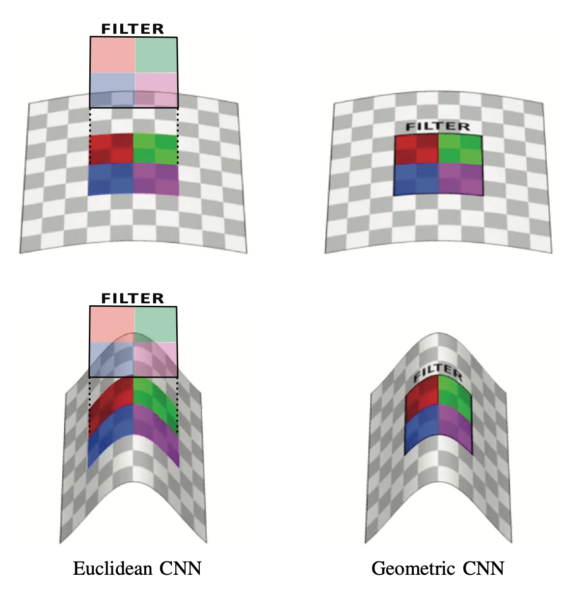